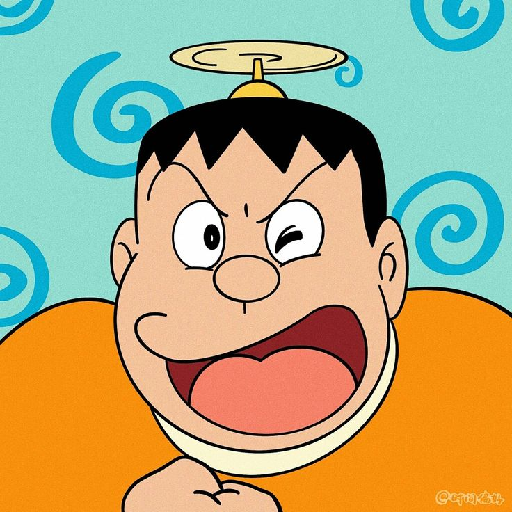
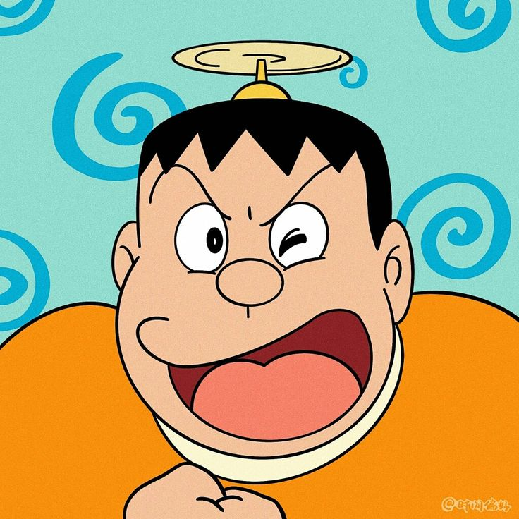

Doraemon
Doraemon is a beloved Japanese manga and anime character, known for his iconic blue robotic cat appearance and magical pocket filled with futuristic gadgets, who embarks on heartwarming adventures alongside his friend Nobita.

Background
Doraemon is a fictional character from the renowned Japanese manga and anime series bearing his name, springs to life from the imaginative brilliance of the creator, Fujiko F.Fuijo. Doreamon is a male robotic cat, with his distinctive lack of ears, journeys back from the 22nd century to offer invaluable assistance to a young lad named Nobita. Set in modern-day Japan, Doraemon, hailing from the 22nd century, employs his vast collection of futuristic gadgets from his magical pocket to aid Nobita in navigating the trials and tribulations of everyday life. Throughout the series, the duo embarks on countless humorous escapades, teaching valuable life lessons about friendship, perseverance, and kindness along the way. Doraemon's iconic blue appearance and endearing charm have captivated audiences worldwide, making the series a beloved classic cherished by generations.
Video
Audio
Dive Into Doraemon's Universe
-
Character Traits
- Kindness:
- Doraemon is always ready to help those in need, whether it's best friend Nobita or a stranger.
- He often goes out of his way to make others happy, even if it means sacrificing his own time or comfort.
- Doraemon's compassionate nature extends to all living beings, showing empathy towards animals and humans alike.
- Loyalty:
- Despite Nobita's shortcomings and mistakes, Doraemon remains by his side, offering unwavering support and guidance.
- His loyalty is not limited to just his friends; Doraemon is dedicated to upholding justice and doing what is morally right.
- He is fiercely loyal to his friends, especially Nobita, whom he considers his closest companion.
- Optimism:
- Doraemon maintains a positive outlook on life, even in the face of adversity.
- He believes in the potential for growth and improvement, encouraging Nobita and others to strive for their goals and never give up.
- Doraemon's optimism serves as a source of inspiration for those around him, reminding them that there is always hope and a brighter future ahead.
-
Gadgets
- Anywhere Door:
- Instant transportation to any desired location.
- Facilitates exploration of new places and adventures.
- Helps Nobita and his friends escape tricky situations.
- Bamboo-Copter:
- A propeller hat that lets you fly into the air.
- Provides quick getaway options during emergencies.
- Nobita often uses it to escape Gian.
- Time Machine:
- Doraemon maintains a positive outlook on life, even in the face of adversity.
- He believes in the potential for growth and improvement, encouraging Nobita and others to strive for their goals and never give up.
- Doraemon's optimism serves as a source of inspiration for those around him, reminding them that there is always hope and a brighter future ahead.
- Characters
 

Nobita
Suzuka
Giyan
Suneo
Dekisugi
News
'Doreamon' creator & the iconic half of 'Fujito Fujio', Motoo Abito, passes away at 88
The manga community is in a sea of loss as it grieves the death of Motoo Abiko, the co-creator of 'Doraemon' and several other beloved series. The famed Japanese artist was 88-year-old at the time of his death and media reports claim that he was found outside his home, near Tokyo.
Read more